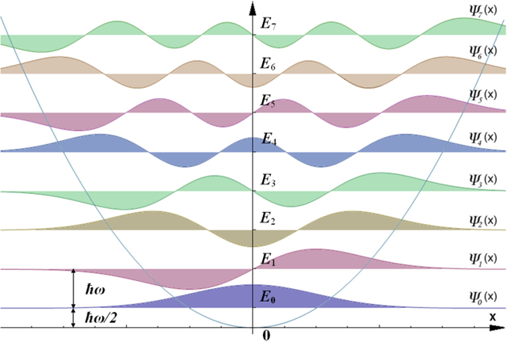

Clase 11: Introducción al paquete Scipy
El paquete Scipy es una colección de algoritmos y funciones construida sobre Numpy para facilitar cálculos y actividades relacionadas con el trabajo técnico/científico.
Una mirada rápida a Scipy
La ayuda de scipy contiene (con help(scipy) entre otras cosas)
Contents
--------
SciPy imports all the functions from the NumPy namespace, and in
addition provides:
Subpackages
-----------
Using any of these subpackages requires an explicit import. For example,
``import scipy.cluster``.
::
cluster --- Vector Quantization / Kmeans
fftpack --- Discrete Fourier Transform algorithms
integrate --- Integration routines
interpolate --- Interpolation Tools
io --- Data input and output
linalg --- Linear algebra routines
linalg.blas --- Wrappers to BLAS library
linalg.lapack --- Wrappers to LAPACK library
misc --- Various utilities that don't have
another home.
ndimage --- n-dimensional image package
odr --- Orthogonal Distance Regression
optimize --- Optimization Tools
signal --- Signal Processing Tools
sparse --- Sparse Matrices
sparse.linalg --- Sparse Linear Algebra
sparse.linalg.dsolve --- Linear Solvers
sparse.linalg.dsolve.umfpack --- :Interface to the UMFPACK library:
Conjugate Gradient Method (LOBPCG)
sparse.linalg.eigen --- Sparse Eigenvalue Solvers
sparse.linalg.eigen.lobpcg --- Locally Optimal Block Preconditioned
Conjugate Gradient Method (LOBPCG)
spatial --- Spatial data structures and algorithms
special --- Special functions
stats --- Statistical Functions
Más información puede encontrarse en la documentación oficial de Scipy
import numpy as np
import matplotlib.pyplot as plt
%matplotlib inline
Funciones especiales
En el submódulo scipy.special están definidas un número de funciones
especiales. Una lista general de las funciones definidas (De cada tipo
hay varias funciones) es:
Airy functions
Elliptic Functions and Integrals
Bessel Functions
Struve Functions
Raw Statistical Functions
Information Theory Functions
Gamma and Related Functions
Error Function and Fresnel Integrals
Legendre Functions
Ellipsoidal Harmonics
Orthogonal polynomials
Hypergeometric Functions
Parabolic Cylinder Functions
Mathieu and Related Functions
Spheroidal Wave Functions
Kelvin Functions
Combinatorics
Other Special Functions
Convenience Functions
from scipy import special
Funciones de Bessel
Las funciones de Bessel son soluciones de la ecuación diferencial:
Para valores enteros de \(\nu\) se trata de una familia de funciones que aparecen como soluciones de problemas de propagación de ondas en problemas con simetría cilíndrica.
np.info(special.jv)
jv(x1, x2, /, out=None, *, where=True, casting='same_kind', order='K', dtype=None, subok=True[, signature, extobj]) jv(v, z) Bessel function of the first kind of real order and complex argument. Parameters ---------- v : array_like Order (float). z : array_like Argument (float or complex). Returns ------- J : ndarray Value of the Bessel function, \(J_v(z)\). Notes ----- For positive v values, the computation is carried out using the AMOS [1]_ zbesj routine, which exploits the connection to the modified Bessel function \(I_v\), .. math:: J_v(z) = exp(vpiimath/2) I_v(-imath z)qquad (Im z > 0) J_v(z) = exp(-vpiimath/2) I_v(imath z)qquad (Im z < 0) For negative v values the formula, .. math:: J_{-v}(z) = J_v(z) cos(pi v) - Y_v(z) sin(pi v) is used, where \(Y_v(z)\) is the Bessel function of the second kind, computed using the AMOS routine zbesy. Note that the second term is exactly zero for integer v; to improve accuracy the second term is explicitly omitted for v values such that v = floor(v). Not to be confused with the spherical Bessel functions (see spherical_jn). See also -------- jve : \(J_v\) with leading exponential behavior stripped off. spherical_jn : spherical Bessel functions. References ---------- .. [1] Donald E. Amos, "AMOS, A Portable Package for Bessel Functions of a Complex Argument and Nonnegative Order", http://netlib.org/amos/
np.info(special.jn_zeros)
jn_zeros(n, nt) Compute zeros of integer-order Bessel functions Jn. Compute nt zeros of the Bessel functions \(J_n(x)\) on the interval \((0, \infty)\). The zeros are returned in ascending order. Note that this interval excludes the zero at \(x = 0\) that exists for \(n > 0\). Parameters ---------- n : int Order of Bessel function nt : int Number of zeros to return Returns ------- ndarray First n zeros of the Bessel function. See Also -------- jv References ---------- .. [1] Zhang, Shanjie and Jin, Jianming. "Computation of Special Functions", John Wiley and Sons, 1996, chapter 5. https://people.sc.fsu.edu/~jburkardt/f_src/special_functions/special_functions.html Examples -------- >>> import scipy.special as sc We can check that we are getting approximations of the zeros by evaluating them with jv. >>> n = 1 >>> x = sc.jn_zeros(n, 3) >>> x array([ 3.83170597, 7.01558667, 10.17346814]) >>> sc.jv(n, x) array([-0.00000000e+00, 1.72975330e-16, 2.89157291e-16]) Note that the zero atx = 0forn > 0is not included. >>> sc.jv(1, 0) 0.0
# Ceros de la función de Bessel
# Los tres primeros valores de x en los cuales se anula la función de Bessel de orden 4.
special.jn_zeros(4,3)
array([ 7.58834243, 11.06470949, 14.37253667])
x = np.linspace(0, 16, 50)
for n in range(0,8,2):
p= plt.plot(x, special.jn(n, x), label='$J_{}(x)$'.format(n))
z = special.jn_zeros(n, 6)
z = z[z < 15]
plt.plot(z, np.zeros(z.size), 'o', color= p[0].get_color())
plt.legend(title='Funciones $J_n$ de Bessel', ncol=2);
plt.grid(True)
# jn es otro nombre para jv
print(special.jn == special.jv)
print(special.jn is special.jv)
True
True
Como vemos, hay funciones para calcular funciones de Bessel. Aquí
mostramos los órdenes enteros pero también se pueden utilizar órdenes
\(\nu\) reales. La lista de funciones de Bessel (puede obtenerse de
la ayuda sobre scipy.special) es:
Bessel Functions
Zeros of Bessel Functions
Faster versions of common Bessel Functions
Integrals of Bessel Functions
Derivatives of Bessel Functions
Spherical Bessel Functions
Riccati-Bessel Functions
Por ejemplo, podemos calcular las funciones esféricas de Bessel, que aparecen en problemas con simetría esférica:
x = np.linspace(0, 16, 50)
for n in range(0,7,2):
p= plt.plot(x, special.spherical_jn(n, x), label='$j_{}(x)$'.format(n))
plt.legend(title='Funciones esféricas de Bessel $j_n$', ncol=2);
plt.grid(True)
Función Error
La función error es el resultado de integrar una función Gaussiana
mientras que las integrales seno y coseno de Fresnel están definidas por:
x = np.linspace(-3, 3,100)
f = special.fresnel(x)
plt.plot(x, special.erf(x),'-', label=r'$\mathrm{erf}(x)$')
plt.plot(x, f[0],'-', label=r'$\mathrm{ssa}(x)$')
plt.plot(x, f[1],'-', label=r'$\mathrm{csa}(x)$')
plt.xlabel('$x$')
plt.ylabel('$f(x)$')
plt.legend(loc='best')
plt.grid(True)
Evaluación de polinomios ortogonales
Scipy.special tiene funciones para evaluar eficientemente polinomios
ortogonales
Por ejemplo si queremos, evaluar los polinomios de Laguerre, solución de la ecuación diferencial:
x = np.linspace(-1, 1,100)
for n in range(2,6):
plt.plot(x, special.eval_laguerre(n, x),'-', label=r'$n={}$'.format(n))
plt.xlabel('$x$')
plt.ylabel('$f(x)$')
plt.legend(loc='best', ncol=2)
plt.grid(True)
Los polinomios de Chebyshev son solución de
x = np.linspace(-1, 1,100)
for n in range(2,6):
plt.plot(x, special.eval_chebyt(n, x),'-', label=f'$n={n}$')
plt.xlabel('$x$')
plt.ylabel('$f(x)$')
plt.legend(loc='best', ncol=2)
plt.ylim((-1.1,2))
plt.grid(True)
Factorial, permutaciones y combinaciones
Hay funciones para calcular varias funciones relacionadas con combinatoria
La función comb() da el número de maneras de elegir k de un
total de N elementos. Sin repeticiones está dada por:
mientras que si cada elemento puede repetirse, la fórmula es:
N = 10
k = np.arange(2,4)
special.comb(N, k)
array([ 45., 120.])
# Si usamos exact=True, k no puede ser un array
special.comb(N,3,exact=True)
120
special.comb(N,k, repetition=True)
array([ 55., 220.])
El número de permutaciones se obtiene con la función perm(), y está
dado por:
special.perm(N,k)
array([ 90., 720.])
que corresponde a:
Los números factorial (N!) y doble factorial (N!!) son:
N = np.array([3,6,8])
print(f"{N}! = {special.factorial(N)}")
print(f"{N}!! = {special.factorial2(N)}")
[3 6 8]! = [6.000e+00 7.200e+02 4.032e+04]
[3 6 8]!! = [ 3. 48. 384.]
Integración numérica
Scipy tiene rutinas para integrar numéricamente funciones o tablas de datos. Por ejemplo para integrar funciones en la forma:
la función más utilizada es quad, que llama a distintas rutinas del
paquete QUADPACK dependiendo de los argumentos que toma. Entre los
aspectos más notables está la posibilidad de elegir una función de peso
entre un conjunto definido de funciones, y la posibilidad de elegir un
dominio de integración finito o infinito.
from scipy import integrate
x = np.linspace(0., 10, 100)
def f1(x):
return np.sin(x)*np.exp(-np.square(x+1)/10)
plt.plot(x,f1(x))
[<matplotlib.lines.Line2D at 0x7f0548a9fa90>]
integrate.quad(f1,0,1)
(0.34858491873298725, 3.870070028144515e-15)
np.info(integrate.quad)
quad(func, a, b, args=(), full_output=0, epsabs=1.49e-08, epsrel=1.49e-08,
limit=50, points=None, weight=None, wvar=None, wopts=None, maxp1=50,
limlst=50)
Compute a definite integral.
Integrate func from a to b (possibly infinite interval) using a
technique from the Fortran library QUADPACK.
Parameters
----------
func : {function, scipy.LowLevelCallable}
A Python function or method to integrate. If func takes many
arguments, it is integrated along the axis corresponding to the
first argument.
If the user desires improved integration performance, then f may
be a scipy.LowLevelCallable with one of the signatures::
double func(double x)
double func(double x, void user_data)
double func(int n, double *xx)
double func(int n, double *xx, void *user_data)
The ``user_data`` is the data contained in the `scipy.LowLevelCallable`.
In the call forms with ``xx``, ``n`` is the length of the ``xx``
array which contains ``xx[0] == x`` and the rest of the items are
numbers contained in the ``args`` argument of quad.
In addition, certain ctypes call signatures are supported for
backward compatibility, but those should not be used in new code.
a : float
Lower limit of integration (use -numpy.inf for -infinity).
b : float
Upper limit of integration (use numpy.inf for +infinity).
args : tuple, optional
Extra arguments to pass to `func`.
full_output : int, optional
Non-zero to return a dictionary of integration information.
If non-zero, warning messages are also suppressed and the
message is appended to the output tuple.
Returns
-------
y : float
The integral of func from `a` to `b`.
abserr : float
An estimate of the absolute error in the result.
infodict : dict
A dictionary containing additional information.
Run scipy.integrate.quad_explain() for more information.
message
A convergence message.
explain
Appended only with 'cos' or 'sin' weighting and infinite
integration limits, it contains an explanation of the codes in
infodict['ierlst']
Other Parameters
----------------
epsabs : float or int, optional
Absolute error tolerance. Default is 1.49e-8. `quad` tries to obtain
an accuracy of ``abs(i-result) <= max(epsabs, epsrel*abs(i))``
where ``i`` = integral of `func` from `a` to `b`, and ``result`` is the
numerical approximation. See `epsrel` below.
epsrel : float or int, optional
Relative error tolerance. Default is 1.49e-8.
If ``epsabs <= 0``, `epsrel` must be greater than both 5e-29
and ``50 * (machine epsilon)``. See `epsabs` above.
limit : float or int, optional
An upper bound on the number of subintervals used in the adaptive
algorithm.
points : (sequence of floats,ints), optional
A sequence of break points in the bounded integration interval
where local difficulties of the integrand may occur (e.g.,
singularities, discontinuities). The sequence does not have
to be sorted. Note that this option cannot be used in conjunction
with ``weight``.
weight : float or int, optional
String indicating weighting function. Full explanation for this
and the remaining arguments can be found below.
wvar : optional
Variables for use with weighting functions.
wopts : optional
Optional input for reusing Chebyshev moments.
maxp1 : float or int, optional
An upper bound on the number of Chebyshev moments.
limlst : int, optional
Upper bound on the number of cycles (>=3) for use with a sinusoidal
weighting and an infinite end-point.
See Also
--------
dblquad : double integral
tplquad : triple integral
nquad : n-dimensional integrals (uses `quad` recursively)
fixed_quad : fixed-order Gaussian quadrature
quadrature : adaptive Gaussian quadrature
odeint : ODE integrator
ode : ODE integrator
simpson : integrator for sampled data
romb : integrator for sampled data
scipy.special : for coefficients and roots of orthogonal polynomials
Notes
-----
**Extra information for quad() inputs and outputs*
If full_output is non-zero, then the third output argument
(infodict) is a dictionary with entries as tabulated below. For
infinite limits, the range is transformed to (0,1) and the
optional outputs are given with respect to this transformed range.
Let M be the input argument limit and let K be infodict['last'].
The entries are:
'neval'
The number of function evaluations.
'last'
The number, K, of subintervals produced in the subdivision process.
'alist'
A rank-1 array of length M, the first K elements of which are the
left end points of the subintervals in the partition of the
integration range.
'blist'
A rank-1 array of length M, the first K elements of which are the
right end points of the subintervals.
'rlist'
A rank-1 array of length M, the first K elements of which are the
integral approximations on the subintervals.
'elist'
A rank-1 array of length M, the first K elements of which are the
moduli of the absolute error estimates on the subintervals.
'iord'
A rank-1 integer array of length M, the first L elements of
which are pointers to the error estimates over the subintervals
with L=K if K<=M/2+2 or L=M+1-K otherwise. Let I be the
sequence infodict['iord'] and let E be the sequence
infodict['elist']. Then E[I[1]], ..., E[I[L]] forms a
decreasing sequence.
If the input argument points is provided (i.e., it is not None),
the following additional outputs are placed in the output
dictionary. Assume the points sequence is of length P.
'pts'
A rank-1 array of length P+2 containing the integration limits
and the break points of the intervals in ascending order.
This is an array giving the subintervals over which integration
will occur.
'level'
A rank-1 integer array of length M (=limit), containing the
subdivision levels of the subintervals, i.e., if (aa,bb) is a
subinterval of (pts[1], pts[2]) where pts[0] and pts[2]
are adjacent elements of infodict['pts'], then (aa,bb) has level l
if |bb-aa| = |pts[2]-pts[1]| * 2**(-l).
'ndin'
A rank-1 integer array of length P+2. After the first integration
over the intervals (pts[1], pts[2]), the error estimates over some
of the intervals may have been increased artificially in order to
put their subdivision forward. This array has ones in slots
corresponding to the subintervals for which this happens.
Weighting the integrand
The input variables, weight and wvar, are used to weight the
integrand by a select list of functions. Different integration
methods are used to compute the integral with these weighting
functions, and these do not support specifying break points. The
possible values of weight and the corresponding weighting functions are.
========== =================================== =====================
weight Weight function used wvar
========== =================================== =====================
'cos' cos(w*x) wvar = w
'sin' sin(w*x) wvar = w
'alg' g(x) = ((x-a)**alpha)*((b-x)**beta) wvar = (alpha, beta)
'alg-loga' g(x)*log(x-a) wvar = (alpha, beta)
'alg-logb' g(x)*log(b-x) wvar = (alpha, beta)
'alg-log' g(x)*log(x-a)*log(b-x) wvar = (alpha, beta)
'cauchy' 1/(x-c) wvar = c
========== =================================== =====================
wvar holds the parameter w, (alpha, beta), or c depending on the weight
selected. In these expressions, a and b are the integration limits.
For the 'cos' and 'sin' weighting, additional inputs and outputs are
available.
For finite integration limits, the integration is performed using a
Clenshaw-Curtis method which uses Chebyshev moments. For repeated
calculations, these moments are saved in the output dictionary:
'momcom'
The maximum level of Chebyshev moments that have been computed,
i.e., if M_c is infodict['momcom'] then the moments have been
computed for intervals of length |b-a| * 2**(-l),
l=0,1,...,M_c.
'nnlog'
A rank-1 integer array of length M(=limit), containing the
subdivision levels of the subintervals, i.e., an element of this
array is equal to l if the corresponding subinterval is
|b-a|* 2**(-l).
'chebmo'
A rank-2 array of shape (25, maxp1) containing the computed
Chebyshev moments. These can be passed on to an integration
over the same interval by passing this array as the second
element of the sequence wopts and passing infodict['momcom'] as
the first element.
If one of the integration limits is infinite, then a Fourier integral is
computed (assuming w neq 0). If full_output is 1 and a numerical error
is encountered, besides the error message attached to the output tuple,
a dictionary is also appended to the output tuple which translates the
error codes in the array info['ierlst'] to English messages. The
output information dictionary contains the following entries instead of
'last', 'alist', 'blist', 'rlist', and 'elist':
'lst'
The number of subintervals needed for the integration (call it K_f).
'rslst'
A rank-1 array of length M_f=limlst, whose first K_f elements
contain the integral contribution over the interval
(a+(k-1)c, a+kc) where c = (2*floor(|w|) + 1) * pi / |w|
and k=1,2,...,K_f.
'erlst'
A rank-1 array of length M_f containing the error estimate
corresponding to the interval in the same position in
infodict['rslist'].
'ierlst'
A rank-1 integer array of length M_f containing an error flag
corresponding to the interval in the same position in
infodict['rslist']. See the explanation dictionary (last entry
in the output tuple) for the meaning of the codes.
Examples
--------
Calculate \(\int^4_0 x^2 dx\) and compare with an analytic result
>>> from scipy import integrate
>>> x2 = lambda x: x**2
>>> integrate.quad(x2, 0, 4)
(21.333333333333332, 2.3684757858670003e-13)
>>> print(4**3 / 3.) # analytical result
21.3333333333
Calculate \(\int^\infty_0 e^{-x} dx\)
>>> invexp = lambda x: np.exp(-x)
>>> integrate.quad(invexp, 0, np.inf)
(1.0, 5.842605999138044e-11)
>>> f = lambda x,a : a*x
>>> y, err = integrate.quad(f, 0, 1, args=(1,))
>>> y
0.5
>>> y, err = integrate.quad(f, 0, 1, args=(3,))
>>> y
1.5
Calculate \(\int^1_0 x^2 + y^2 dx\) with ctypes, holding
y parameter as 1::
testlib.c =>
double func(int n, double args[n]){
return args[0]*args[0] + args[1]*args[1];}
compile to library testlib.*
::
from scipy import integrate
import ctypes
lib = ctypes.CDLL('/home/.../testlib.*') #use absolute path
lib.func.restype = ctypes.c_double
lib.func.argtypes = (ctypes.c_int,ctypes.c_double)
integrate.quad(lib.func,0,1,(1))
#(1.3333333333333333, 1.4802973661668752e-14)
print((1.0**3/3.0 + 1.0) - (0.0**3/3.0 + 0.0)) #Analytic result
# 1.3333333333333333
Be aware that pulse shapes and other sharp features as compared to the
size of the integration interval may not be integrated correctly using
this method. A simplified example of this limitation is integrating a
y-axis reflected step function with many zero values within the integrals
bounds.
>>> y = lambda x: 1 if x<=0 else 0
>>> integrate.quad(y, -1, 1)
(1.0, 1.1102230246251565e-14)
>>> integrate.quad(y, -1, 100)
(1.0000000002199108, 1.0189464580163188e-08)
>>> integrate.quad(y, -1, 10000)
(0.0, 0.0)
[((0, xmax), integrate.quad(f1,0,xmax)[0]) for xmax in np.arange(1,5)]
[((0, 1), 0.34858491873298725),
((0, 2), 0.8600106383901718),
((0, 3), 1.0438816972950689),
((0, 4), 1.0074874684274517)]
La rutina devuelve dos valores. El primero es la estimación del valor de la integral y el segundo una estimación del error absoluto . Además, la función acepta límites de integración infinitos (\(\pm \infty\), definidos en Numpy)
integrate.quad(f1,-np.inf,np.inf)
(-0.3871487639489655, 5.4599545822826244e-09)
Ejemplo de función fuertemente oscilatoria
k = 200
L = 2*np.pi
a = 0.1
def f2(x):
return np.sin(k*x)*np.exp(-a*x)
# Valor exacto de la integral
I=k/a**2*(np.exp(-a*L)-1)/(1-k**2/a**2)
print(I)
0.0023325601276845158
Iq= integrate.quad(f2,0,L)
<ipython-input-28-909b8a42d90d>:1: IntegrationWarning: The maximum number of subdivisions (50) has been achieved.
If increasing the limit yields no improvement it is advised to analyze
the integrand in order to determine the difficulties. If the position of a
local difficulty can be determined (singularity, discontinuity) one will
probably gain from splitting up the interval and calling the integrator
on the subranges. Perhaps a special-purpose integrator should be used.
Iq= integrate.quad(f2,0,L)
I_err = (I-Iq[0])/I # Error relativo con el valor exacto
print("I= {:.5g} ± {:.5g}\nError relativo= {:.6g}\n".format(*Iq, I_err))
I= -0.0043611 ± 0.019119
Error relativo= 2.86965
El error relativo entre el valor obtenido numéricamente y el valor
exacto I es grande. Esto se debe a la naturaleza del integrando.
Grafiquemos sólo una pequeña parte
x = np.linspace(0,L,1500)
plt.plot(x, f2(x))
[<matplotlib.lines.Line2D at 0x7f0548b0e710>]
La rutina quad es versatil y tiene una opción específica para
integrandos oscilatorios, que permite calcular las integrales de una
función \(f\) multiplicadas por una función oscilatoria
Para ello debemos usar el argumento weight y wvar. En este caso
usaremos weight='sin'
# La función sin el factor oscilatorio:
def f3(x):
return np.exp(-a*x)
Is= integrate.quad(f3,0,L, weight='sin', wvar=k)
I_err = (I-Is[0])/I # Error relativo con el valor exacto
print("I= {:.5g} ± {:.5g}\nError relativo= {:.6g}\n".format(*Is, I_err))
I= 0.0023326 ± 1.1788e-33
Error relativo= 5e-07
Esto es así, porque una vez que separamos el comportamiento oscilatorio, la función es suave y fácilmente integrable
plt.plot(x, f3(x))
[<matplotlib.lines.Line2D at 0x7f0548b7a4d0>]
El error relativo obtenido respecto al valor exacto es varios órdenes de magnitud menor. Comparemos los tiempos de ejecución:
%timeit integrate.quad(f2,0,L)
<magic-timeit>:1: IntegrationWarning: The maximum number of subdivisions (50) has been achieved.
If increasing the limit yields no improvement it is advised to analyze
the integrand in order to determine the difficulties. If the position of a
local difficulty can be determined (singularity, discontinuity) one will
probably gain from splitting up the interval and calling the integrator
on the subranges. Perhaps a special-purpose integrator should be used.
3.34 ms ± 246 µs per loop (mean ± std. dev. of 7 runs, 100 loops each)
%timeit integrate.quad(f3,0,L, weight='sin', wvar=k)
24.8 µs ± 785 ns per loop (mean ± std. dev. of 7 runs, 10000 loops each)
Usar un integrador más específico para el integrando no sólo nos da un mejor resultado sino que el tiempo de ejecución es más de 100 veces más corto.
Funciones de más de una variable
Consideremos el caso en que queremos integrar alguna función especial.
Podemos usar Scipy para realizar la integración y para evaluar el
integrando. Como special.jn depende de dos variables, tenemos que
crear una función intermedia que dependa sólo de la variable de
integración
integrate.quad(lambda x: special.jn(0,x), 0 , 10)
(1.0670113039567362, 7.434789460651883e-14)
En realidad, la función quad permite el uso de argumentos que se le
pasan a la función a integrar. La forma de llamar al integrador será en
general:
quad(func, a, b, args=(), full_output=0, epsabs=1.49e-08, epsrel=1.49e-08,
limit=50, points=None, weight=None, wvar=None, wopts=None, maxp1=50,
limlst=50)
El argumento args debe ser una tupla, y contiene los argumentos
extra que acepta la función a integrar, esta función debe llamarse en la
forma func(x, *args). O sea que siempre la integramos respecto a su
primer argumento. Apliquemos esto a la función de Bessel. En este caso,
la variable a integrar es el segundo argumento de special.jn, por lo
que creamos una función con el orden correcto de argumentos:
def bessel_n(x, n):
return special.jn(n,x)
integrate.quad(bessel_n, 0, 10, args=(0,))
(1.0670113039567362, 7.434789460651883e-14)
print('n \int_0^10 J_n(x) dx')
for n in range(6):
print(n,': ', integrate.quad(bessel_n, 0, 10, args=(n,))[0])
n int_0^10 J_n(x) dx 0 : 1.0670113039567362 1 : 1.2459357644513482 2 : 0.9800658116190144 3 : 0.7366751370811073 4 : 0.8633070530086401 5 : 1.1758805092851239
Nota
Para calcular integrales múltiples existen rutinas que hacen llamados
sucesivos a la rutina quad(). Esto incluye rutinas para integrales
dobles (rutina dblquad()), triples (rutina tplquad()) y en
general n-dimensionales (rutina nquad())
Ejercicios 11 (a)
Graficar para valores de \(k=1,2,5,10\) y como función del límite superior \(L\), el valor de la integral:
con rango de variación de \(L\) entre \(0\) y \(2 \pi\).
.
Álgebra lineal
El módulo de álgebra lineal se solapa un poco con funciones similares en Numpy. Ambos usan finalmente una implementación de bibliotecas conocidas (LAPACK, BLAS). La diferencia es que Scipy asegura que utiliza las optimizaciones de la librería ATLAS y presenta algunos métodos y algoritmos que no están presentes en Numpy.
Una de las aplicaciones más conocidas por nosotros es la rotación de vectores. Como bien sabemos rotar un vector es equivalente a multiplicarlo por la matriz de rotación correspondiente. Esquemáticamente:

(Gentileza de xkcd)
from scipy import linalg
Este módulo tiene funciones para trabajar con matrices, descriptas como arrays bidimensionales.
arr = np.array([[3, 2,1],[6, 4,1],[12, 8, 13.3]])
print(arr)
A = np.array([[1, -2,-3],[1, -1,-1],[-1, 3, 1]])
print(A)
# La matriz transpuesta
A.T
Productos y normas
Norma de un vector
La norma está dada por
v = np.array([2,1,3])
linalg.norm(v) # Norma
linalg.norm(v) == np.sqrt(np.sum(np.square(v)))
Producto interno
El producto entre una matriz y un vector está definido en Numpy
mediante las funciones dot(), o matmul(), o mediante el operador
@:
w1 = np.dot(A, v) # Multiplicación de matrices
w1
np.allclose(np.dot(A,v), np.matmul(A,v)) # dot y matmul son equivalentes
np.allclose(A @ v, np.matmul(A,v)) # También son equivalentes al operador @
w2 = np.dot(v, A)
w2
np.dot(v.T, A) == np.dot(v, A) # Si es unidimensional, el vector se transpone automáticamente
print(v.shape, A.shape)
El producto interno entre vectores se calcula de la misma manera
np.dot(v,w1)
y está relacionado con la norma
linalg.norm(v) == np.sqrt(np.dot(v,v))
np.dot(v,A)
v.shape
v2 = np.reshape(v, (3,1))
v2.shape
np.dot(A, v2)
np.dot(A, v2).shape
Ahora las dimensiones de v2 y A no coinciden para hacer el
producto matricial
np.dot(v2, A)
np.dot( v2,A)
Notemos que el producto interno se puede pensar como un producto de matrices. En este caso, el producto de una matriz de 3x1, por otra de 1x3:
donde estamos pensando al vector como columna.
Producto exterior
El producto exterior puede ponerse en términos de multiplicación de matrices como
oprod = np.outer(v,w1)
print(oprod)
Aplicación a la resolución de sistemas de ecuaciones
Vamos a usar scipy.linalg permite obtener determinantes e inversas
de matrices. Veamos como resolver un sistema de ecuaciones lineales:
Esta ecuación se puede escribir en forma matricial como
Veamos un ejemplo concreto. Supongamos que tenemos el siguiente sistema
por lo que, en forma matricial será:
y
A = np.array([[1,2,3],[2,1,3],[4,1,-1]])
b = np.array([[1,2,3]]).T
print('A=', A,"\n")
print('b=', b,"\n")
x = np.dot(linalg.inv(A), b)
print('Resultado:\n', x)
Descomposición de matrices
Si consideramos el mismo problema de resolución de ecuaciones
pero donde debemos resolver el problema para un valor dado de los coeficientes (la matriz \(A\)) y muchos valores distintos del vector \(b\), suele ser útil realizar lo que se llama la descompocición \(LU\) de la matriz.
Si escribimos a la matriz \(A\) como el producto de tres matrices \(A = PLU\) donde \(P\) es una permutación de las filas, \(L\) es una matriz triangular inferior (Los elementos por encima de la diagonal son nulos) y \(U\) una triangular superior. En este caso los dos sistemas:
tienen la misma solución. Entonces podemos resolver el sistema en dos pasos:
con
En ese caso, resolvemos una sola vez la descompocición \(LU\), y luego ambas ecuaciones se pueden resolver eficientemente debido a la forma de las matrices.
A = np.array([[1,3,4],[2,1,3],[4,1,2]])
print('A=', A,"\n")
P, L, U = linalg.lu(A)
print("PLU=", np.dot(P, np.dot(L, U)))
print("\nLU=", np.dot(L, U))
print("\nL=",L)
print("\nU=", U)
Autovalores y autovectores
La necesidad de encontrar los autovalores y autovectores de una matriz aparece en muchos problemas de física e ingeniería. Se trata de encontrar el escalar \(\lambda\) y el vector (no nulo) \(v\) tales que
with np.printoptions(precision=3):
B = np.array([[0,1.,1],[2,1,0], [3,4,5]])
print(B,'\n')
u, v = linalg.eig(B)
c = np.dot(v,np.dot(np.diag(u), linalg.inv(v)))
print(c,'\n')
print(np.real_if_close(c),'\n')
print('')
print('Autovalores=', u,'\n')
print('Autovalores=', np.real_if_close(u))
Veamos como funciona para la matriz definida anteriormente
print(A)
u, v = linalg.eig(A)
print(np.real_if_close(np.dot(v,np.dot(np.diag(u), linalg.inv(v)))))
print("Autovalores=" , np.real_if_close(u))
print("Autovectores=", np.real_if_close(v))
np.real_if_close?
Rutinas de resolución de ecuaciones lineales
Scipy tiene además de las rutinas de trabajo con matrices, rutinas
de resolución de sistemas de ecuaciones. En particular la función
solve()
solve(a, b, sym_pos=False, lower=False, overwrite_a=False, overwrite_b=False,
debug=False, check_finite=True)
Solve the equation ``a x = b`` for ``x``.
Parameters
----------
a : (M, M) array_like
A square matrix.
b : (M,) or (M, N) array_like
Right-hand side matrix in ``a x = b``.
...
a = np.array([[3, 2, 0], [1, -1, 0], [0, 5, 1]])
b = np.array([2, 4, -1])
x = linalg.solve(a, b)
x
np.allclose(np.dot(a, x) , b)
np.dot(a,x) == b
Para sistemas de ecuaciones grandes, la función solve() es más
rápida que invertir la matriz
A1 = np.random.random((2000,2000))
b1 = np.random.random(2000)
%timeit linalg.solve(A1,b1)
%timeit np.dot(linalg.inv(A1),b1)
Entrada y salida de datos
Entrada/salida con Numpy
Datos en formato texto
Veamos un ejemplo (apenas) más complicado, de un archivo en formato de texto, donde antes de la lista de números hay un encabezado
import numpy as np
import matplotlib.pyplot as plt
!head ../data/tof_signal_5.dat
X0 = np.loadtxt('../data/tof_signal_5.dat')
X0.shape, type(X0)
X0[0].shape
X0[0]
plt.plot(X0[:,0], X0[:,1])
La manera más simple de leer datos de un archivo es a través de
loadtxt().
np.info(np.loadtxt)
loadtxt(fname, dtype=<class 'float'>, comments='#', delimiter=None,
converters=None, skiprows=0, usecols=None, unpack=False, ndmin=0,
encoding='bytes')
Load data from a text file.
Each row in the text file must have the same number of values.
En su forma más simple sólo necesita como argumento el nombre del archivo. En este caso, había una primera línea que fue ignorada porque empieza con el caracter “#” que indica que la línea es un comentario.
Veamos otro ejemplo, donde las líneas que son parte de un encabezado se
saltean, utilizando el argumento skiprows
fdatos= '../data/exper_col.dat'
!head ../data/exper_col.dat
X1 = np.loadtxt(fdatos, skiprows=5)
print(X1.shape)
print(X1[0])
Como el archivo tiene cuatro columnas el array X tiene dimensiones
(74, 4) correspondiente a las 74 filas y las 4 columnas. Si sólo
necesitamos un grupo de estos datos podemos utilizar el argumento
usecols = (c1, c2) que nos permite elegir cuáles son las columnas a
leer:
x, y = np.loadtxt(fdatos, skiprows=5, usecols=[0, 2], unpack=True)
print (x.size, y.size)
Y = np.loadtxt(fdatos, skiprows=5, usecols=[0, 2])
print (Y.size, Y[0])
En este ejemplo, mediante el argumento unpack=True, le indicamos a
la función loadtxtque desempaque lo que lee en variables
diferentes (x,y en este caso)
plt.plot(x,y, 'o-')
Como numpy se especializa en manejar números, tiene muchas funciones
para crear arrays a partir de información numérica a partir de texto o
archivos (como los CSV, por ejemplo). Ya vimos como leer datos con
loadtxt. También se pueden generar desde un string:
np.fromstring(u"1.0 2.3 3.0 4.1 -3.1", sep=" ", dtype=float)
Para guardar datos en formato texto podemos usar, de la misma manera,
Y = np.vstack((x,y)).T
print(Y.shape)
np.savetxt('tmp.dat', Y)
!head tmp.dat
La función savetxt()tiene varios argumentos opcionales:
np.savetxt(fname, X, fmt='%.18e', delimiter=' ', newline='\n', header='', footer='', comments='# ', encoding=None)
Por ejemplo, podemos darle un formato de salida con el argumento
fmt, y darle un encabezado con header
np.savetxt('tmp.dat', Y, fmt='%.6g', header="Energ Exper")
!head tmp.dat
Datos en formato binario
np.save('test.npy', X1) # Grabamos el array a archivo
X2 = np.load('test.npy') # Y lo leemos
# Veamos si alguno de los elementos difiere
print('X1=', X1[:10])
print('X2=', X2[:10])
print('¿Alguna differencia?', np.any(X1-X2))
Ejemplo de análisis de palabras
# %load scripts/10_palabras.py
#! /usr/bin/ipython
import numpy as np
import matplotlib.pyplot as plt
import gzip
ifiname = '../data/palabras.words.gz'
letras = [0] * 512
with gzip.open(ifiname, mode='r') as fi:
for l in fi.readlines():
c = ord(l.decode('utf-8')[0])
letras[c] += 1
nmax = np.nonzero(letras)[0].max() + 1
z = np.array(letras[:nmax])
# nmin = z.nonzero()[0].min() # Máximo valor diferente de cero
nmin = np.argwhere(z != 0).min()
#plt.ion()
with plt.style.context(['seaborn-talk', 'presentation']):
fig = plt.figure(figsize=(10, 8))
#plt.clf()
plt.bar(np.arange(nmin, nmax), z[nmin:nmax])
plt.xlabel('Letras con y sin acentos')
plt.ylabel('Frecuencia')
labels = ['A', 'Z', 'a', 'o', 'z', 'á', 'ú']
ll = [r'$\mathrm{{{}}}$'.format(t) for t in labels]
ts = [ord(t) for t in labels]
plt.xticks(ts, ll, fontsize='xx-large')
x0 = 0.5 * ord('á') + ord('z')
y0 = 0.2 * z.max()
umbral = 0.25
lista = (z > umbral * z.max()).nonzero()[0]
dx = [10, 40, 70]
dy = [-550, -350, -100]
for j, t in enumerate(reversed(lista)):
plt.annotate('{} ({})'.format(chr(t), z[t]), xy=(t, z[t]), xycoords='data',
xytext=(t + dx[j % 3], z[t] + dy[j % 3]), bbox=dict(boxstyle="round", fc="0.8"),
arrowprops=dict(arrowstyle="simple", fc="0.5")
)
Entrada y salida en Scipy
El submódulo io tiene algunas utilidades de entrada y salida de
datos que permite interactuar con otros paquetes/programas. Algunos de
ellos son:
Archivos IDL (Interactive Data Language)
scipy.io.readsav()
Archivos de sonido wav, con
scipy.io.wavfilescipy.io.wavfile.read()scipy.io.wavfile.write()
Archivos fortran sin formato, con
scipy.io.FortranFileArchivos Netcdf (para gran número de datos), con
scipy.io.netcdfArchivos de matrices de Matlab
from scipy import io as sio
a = np.ones((3, 3)) + np.eye(3,3)
print(a)
sio.savemat('datos.mat', {'a': a}) # savemat espera un diccionario
data = sio.loadmat('datos.mat', struct_as_record=True)
print(data['a'])
data
Ejercicios 11 (b)
En el archivo
palabras.words.gzhay una larga lista de palabras, en formato comprimido. Siguiendo la idea del ejemplo dado en clases realizar un histograma de las longitudes de las palabras.Modificar el programa del ejemplo de la clase para calcular el histograma de frecuencia de letras en las palabras (no sólo la primera). Considere el caso insensible a la capitalización: las mayúsculas y minúsculas corresponden a la misma letra (‘á’ es lo mismo que ‘Á’ y ambas corresponden a ‘a’).
Utilizando el mismo archivo de palabras, Guardar todas las palabras en un array y obtener los índices de las palabras que tienen una dada letra (por ejemplo la letra ‘j’), los índices de las palabras con un número dado de letras (por ejemplo 5 letras), y los índices de las palabras cuya tercera letra es una vocal. En cada caso, dar luego las palabras que cumplen dichas condiciones.
En el archivo
colision.npyhay una gran cantidad de datos que corresponden al resultado de una simulación. Los datos están organizados en trece columnas. La primera corresponde a un parámetro, mientras que las 12 restantes corresponde a cada una de las tres componentes de la velocidad de cuatro partículas. Calcular y graficar:la distribución de ocurrencias del primer parámetro.
la distribución de ocurrencias de energías de la tercera partícula.
la distribución de ocurrencias de ángulos de la cuarta partícula, medido respecto al tercer eje.
la distribución de energías de la tercera partícula cuando la cuarta partícula tiene un ángulo menor a 90 grados con el tercer eje.
Realizar los cuatro gráficos utilizando un formato adecuado para presentación (charla o poster).
Leer el archivo
colision.npyy guardar los datos en formato texto con un encabezado adecuado. Usando el comando mágico%timeito el módulo timeit, comparar el tiempo que tarda en leer los datos e imprimir el último valor utilizando el formato de texto y el formato originalnpy. Comparar el tamaño de los dos archivos.El submódulo scipy.constants tiene valores de constantes físicas de interés. Usando este módulo compute la constante de Stefan-Boltzmann \(\sigma\) utilizando la relación:
\[\sigma = \frac{2 \pi^5 k_B^4}{15 h^3 c^2}\]Confirme que el valor obtenido es correcto comparando con la constante para esta cantidad en
scipy.constantsUsando Scipy y Matplotlib grafique las funciones de onda del oscilador armónico unidimensional para las cuatro energías más bajas (\(n=1,2,3,4\)), en el intervalo \([-5,5]\). Asegúrese de que están correctamente normalizados.
Las funciones están dadas por:
donde \(H_{n}\) son los polinomios de Hermite, y usando \(\omega = 2\).
Trate de obtener un gráfico similar al siguiente (tomado de wikipedia. Realizado por By AllenMcC. - File:HarmOsziFunktionen.jpg, CC BY-SA 3.0)
{kind=link}
.